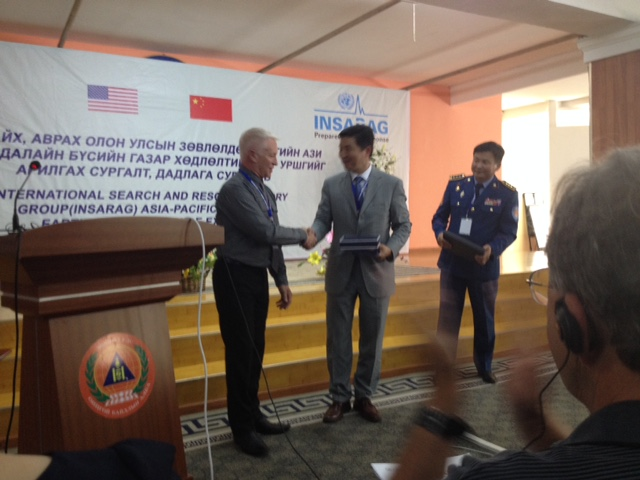
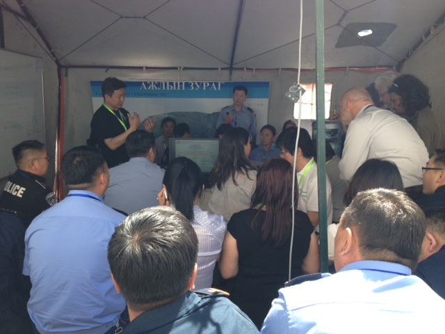
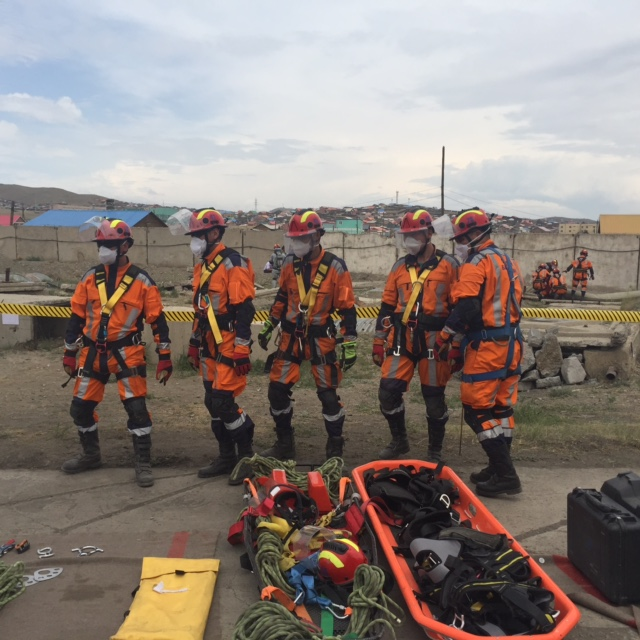

This exercise was held in Ulaanbaatar, Mongolia, from 22 to 26 June 2015. This event was jointly supported by the Governments of China and the United States.
The purpose of the exercise is to practice international coordination methodology in accordance with the INSARAG Guidelines, with a focus on cooperation between national and international disaster managers and response actors as well as joint operations planning between Local Emergency Management Authorities (LEMA) and the international On-Site Operations Coordination Centre (OSOCC). This exercise will see active involvement of international urban search and rescue (USAR) teams from the region responding and working alongside fellow national USAR members, and in parallel, there will be engagement of the national disaster management team working alongside the United Nations in-country response mechanisms during such major disasters.
  